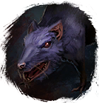

Открыть в интерактивной вики →
| Уровень | 22 |
|---|---|
| Сила (PvE) | 248 |
| Аспект | Hegun |
| Здоровье | 350 |
| Мана | 200 |
| Выносливость | 300 |
Локация
- Посад
- Замок Гастельхоф
- Подзамок
- в одной группе с: Попел
В отряде: Попел (Посад, Замок Гастельхоф, Подзамок)

Открыть в интерактивной вики →
| Уровень | 22 |
|---|---|
| Сила (PvE) | 248 |
| Аспект | Hegun |
| Здоровье | 350 |
| Мана | 200 |
| Выносливость | 300 |
В отряде: Попел (Посад, Замок Гастельхоф, Подзамок)